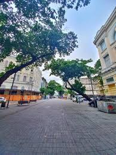
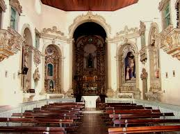

Avenida Rio Branco
A Avenida Rio Branco é uma das vias mais importantes do Recife Antigo, conhecida por sua beleza arquitetônica e por abrigar importantes prédios históricos. Ela conecta o Recife Antigo à zona central da cidade e é um ótimo ponto para passeios turísticos, repleta de cultura, bares e restaurantes.
Igreja de São José do Ribamar
A Igreja de São José do Ribamar é um dos mais antigos templos religiosos de Recife, com uma arquitetura imponente e uma rica história. Ela fica localizada no centro histórico e é famosa não só pela sua beleza, mas também pelas festividades religiosas que realiza ao longo do ano.
